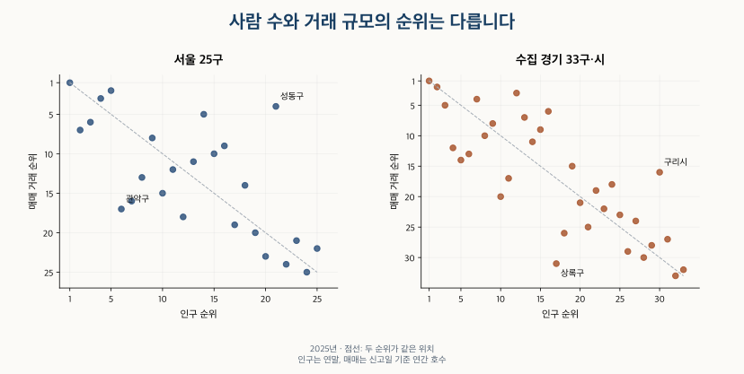

이사와 인구 · 인구와 거래 순위
인구 대비 아파트 거래량: 서울·경기 순위는 왜 다를까?
서울 25구와 수집 경기 33구·시의 인구·아파트 재고·매매 순위를 비교합니다. 인구 1천명당 거래, 비아파트 비중, 연도와 분모에 따른 차이를 확인하고 인기나 매수확률로 읽기 어려운 이유를 정리했습니다.
분석 기간 · 2025년 중심 · 2023~2026.8 보조 비교 | 자료 기준일 · 거래표 갱신 2026-10-12 · 확인 2026-10-16
인구가 많은 지역이 아파트 거래도 많을 것 같지만, 두 순위는 꽤 다릅니다. 2025년 서울 25구 중 24곳, 비교한 경기 33구·시 중 31곳에서 인구와 아파트 매매 거래의 순위가 달랐습니다. 사람 수로 나누면 지역 규모의 차이는 줄일 수 있지만, 그 값이 주민의 매수 확률이나 동네의 인기를 뜻하지는 않습니다.
서울 성동구는 인구 21위지만 아파트 매매 거래는 4위였습니다. 관악구는 인구 6위, 거래 17위였습니다. 두 지역은 아파트 수와 비아파트 비중도 다릅니다. 거래 순위를 읽을 때는 인구·아파트 재고·거래의 세 숫자를 함께 확인해야 합니다.
‘인구 대비 아파트 거래량’은 무엇을 나눈 값인가요?
이 글에서는 신고일 기준 연간 아파트 매매 거래 호수÷연말 주민등록인구×1,000을 계산합니다. 예를 들어 성동구는 매매 4,613호를 인구 274,606명으로 나누어 인구 1천명당 16.8호입니다. 분자는 한 해 동안 신고된 흐름이고, 분모는 연말에 등록된 사람 수입니다.
매매 거래는 한국부동산원이 공표한 아파트 매매 호수입니다. 거래 시점을 계약일로 묶은 실거래 목록과 달리 신고일 기준입니다. 고유한 주택이나 매수자 수를 센 값도 아닙니다. 동일 주택이 다시 거래될 수 있고, 다른 지역에 사는 사람이 살 수도 있습니다. 통계 간 차이는 아파트 거래량 통계의 기준 비교에서 설명합니다.
인구는 외국인을 제외한 주민등록인구로, 거주자·거주불명자·재외국민을 포함합니다. 아파트에 사는 사람만의 수가 아닙니다. 아파트 재고는 매년 11월 1일 총조사의 빈집을 포함한 아파트 호수입니다. 주택 1호와 주민등록 1세대, 생활 단위인 1가구를 같게 보지 않도록 인구·세대·가구의 차이도 구분해 두세요.
어느 지역에서 인구와 거래 순위가 크게 엇갈렸나요?
2025년 성동구와 관악구의 대비가 큽니다. 성동구는 인구 순위보다 거래 순위가 17계단 높고, 관악구는 11계단 낮습니다. 경기의 안산시 상록구는 인구 17위·거래 31위인 반면, 구리시는 인구 30위·거래 16위입니다. 아래 네 지역은 각 비교 범위에서 인구와 거래 순위 차이가 큰 두 곳씩입니다.
| 지역 | 인구 순위 | 아파트 수 순위 | 거래 순위 | 인구 1천명당 거래(호) |
|---|---|---|---|---|
| 성동구 | 21 | 14 | 4 | 16.8 |
| 관악구 | 6 | 19 | 17 | 5.0 |
| 안산시 상록구 | 17 | 27 | 31 | 5.2 |
| 구리시 | 30 | 28 | 16 | 20.5 |
아파트 재고 순위도 인구와 일치하지 않습니다. 성동구는 아파트 수 14위, 관악구는 19위입니다. 주민 수만으로 거래 가능한 아파트의 규모를 대신할 수 없다는 뜻입니다. 그렇다고 재고 차이만으로 거래 순위의 차이가 모두 설명됐다고 결론 내릴 수도 없습니다.

서울 25구와 경기의 비교 지역 수치는 어떻게 되나요?
주 비교는 세 자료가 함께 있는 2025년입니다. 서울은 25구 전체, 경기는 수집한 20개 시를 33구·시로 나눴습니다. 경기도 31시·군 전체의 순위가 아닙니다. 일반구가 있는 시는 구별로 비교하되, 화성은 2025년 당시 화성시로 합쳤습니다. 부모 시와 그 안의 구를 같은 합계에 두 번 넣지 않았습니다.
서울 25구의 인구·아파트 수·거래량 보기
| 지역 | 연말 인구 | 아파트 수 | 매매 거래 | 인구 1천명당 거래 |
|---|---|---|---|---|
| 종로구 | 137,048 | 16,430 | 706 | 5.2 |
| 중구 | 117,805 | 28,595 | 1,360 | 11.5 |
| 용산구 | 201,894 | 40,580 | 1,612 | 8.0 |
| 성동구 | 274,606 | 70,657 | 4,613 | 16.8 |
| 광진구 | 331,167 | 37,426 | 2,178 | 6.6 |
| 동대문구 | 346,241 | 78,425 | 4,190 | 12.1 |
| 중랑구 | 376,916 | 63,078 | 2,300 | 6.1 |
| 성북구 | 422,559 | 87,995 | 4,433 | 10.5 |
| 강북구 | 278,928 | 38,278 | 1,209 | 4.3 |
| 도봉구 | 299,899 | 66,092 | 1,890 | 6.3 |
| 노원구 | 483,541 | 167,810 | 5,590 | 11.6 |
| 은평구 | 455,137 | 74,168 | 2,893 | 6.4 |
| 서대문구 | 300,147 | 60,366 | 3,322 | 11.1 |
| 마포구 | 357,616 | 77,691 | 4,170 | 11.7 |
| 양천구 | 425,088 | 93,082 | 3,645 | 8.6 |
| 강서구 | 549,711 | 120,533 | 4,517 | 8.2 |
| 구로구 | 383,829 | 88,243 | 3,720 | 9.7 |
| 금천구 | 223,290 | 33,150 | 909 | 4.1 |
| 영등포구 | 371,362 | 80,998 | 4,545 | 12.2 |
| 동작구 | 371,924 | 69,379 | 4,134 | 11.1 |
| 관악구 | 477,605 | 59,322 | 2,388 | 5.0 |
| 서초구 | 414,428 | 98,789 | 3,285 | 7.9 |
| 강남구 | 556,330 | 146,914 | 4,484 | 8.1 |
| 송파구 | 643,350 | 137,516 | 5,668 | 8.8 |
| 강동구 | 499,127 | 116,258 | 5,370 | 10.8 |
서울 25구의 네 가지 순위 보기
| 지역 | 인구 | 아파트 수 | 거래 | 인구당 거래 |
|---|---|---|---|---|
| 종로구 | 24 | 25 | 25 | 22 |
| 중구 | 25 | 24 | 22 | 6 |
| 용산구 | 23 | 20 | 21 | 16 |
| 성동구 | 21 | 14 | 4 | 1 |
| 광진구 | 17 | 22 | 19 | 18 |
| 동대문구 | 16 | 11 | 9 | 3 |
| 중랑구 | 12 | 17 | 18 | 21 |
| 성북구 | 9 | 9 | 8 | 10 |
| 강북구 | 20 | 21 | 23 | 24 |
| 도봉구 | 19 | 16 | 20 | 20 |
| 노원구 | 5 | 1 | 2 | 5 |
| 은평구 | 7 | 13 | 16 | 19 |
| 서대문구 | 18 | 18 | 14 | 8 |
| 마포구 | 15 | 12 | 10 | 4 |
| 양천구 | 8 | 7 | 13 | 13 |
| 강서구 | 3 | 4 | 6 | 14 |
| 구로구 | 11 | 8 | 12 | 11 |
| 금천구 | 22 | 23 | 24 | 25 |
| 영등포구 | 14 | 10 | 5 | 2 |
| 동작구 | 13 | 15 | 11 | 7 |
| 관악구 | 6 | 19 | 17 | 23 |
| 서초구 | 10 | 6 | 15 | 17 |
| 강남구 | 2 | 2 | 7 | 15 |
| 송파구 | 1 | 3 | 1 | 12 |
| 강동구 | 4 | 5 | 3 | 9 |
수집 경기 33구·시의 인구·아파트 수·거래량 보기
| 지역 | 연말 인구 | 아파트 수 | 매매 거래 | 인구 1천명당 거래 |
|---|---|---|---|---|
| 수원시 장안구 | 271,136 | 64,265 | 2,503 | 9.2 |
| 수원시 권선구 | 361,064 | 94,882 | 5,187 | 14.4 |
| 수원시 팔달구 | 191,822 | 47,072 | 2,033 | 10.6 |
| 수원시 영통구 | 362,493 | 104,124 | 6,096 | 16.8 |
| 성남시 수정구 | 232,389 | 39,796 | 1,890 | 8.1 |
| 성남시 중원구 | 203,572 | 36,751 | 1,819 | 8.9 |
| 성남시 분당구 | 469,833 | 129,604 | 7,193 | 15.3 |
| 의정부시 | 461,572 | 138,391 | 5,905 | 12.8 |
| 안양시 만안구 | 233,749 | 51,761 | 2,431 | 10.4 |
| 안양시 동안구 | 329,530 | 101,388 | 5,960 | 18.1 |
| 부천시 원미구 | 384,561 | 89,716 | 3,592 | 9.3 |
| 부천시 소사구 | 225,458 | 56,249 | 2,238 | 9.9 |
| 부천시 오정구 | 148,777 | 23,161 | 712 | 4.8 |
| 광명시 | 293,947 | 85,763 | 4,437 | 15.1 |
| 평택시 | 610,402 | 191,682 | 7,057 | 11.6 |
| 안산시 상록구 | 322,739 | 49,663 | 1,666 | 5.2 |
| 안산시 단원구 | 289,769 | 72,191 | 2,694 | 9.3 |
| 고양시 덕양구 | 485,546 | 133,129 | 4,576 | 9.4 |
| 고양시 일산동구 | 296,758 | 69,134 | 2,204 | 7.4 |
| 고양시 일산서구 | 277,777 | 84,301 | 2,973 | 10.7 |
| 과천시 | 79,908 | 20,333 | 883 | 11.1 |
| 구리시 | 186,090 | 48,624 | 3,810 | 20.5 |
| 남양주시 | 729,754 | 210,454 | 7,848 | 10.8 |
| 군포시 | 251,367 | 74,988 | 3,106 | 12.4 |
| 의왕시 | 160,370 | 50,896 | 2,105 | 13.1 |
| 하남시 | 327,939 | 91,208 | 6,352 | 19.4 |
| 용인시 처인구 | 282,044 | 57,338 | 2,235 | 7.9 |
| 용인시 기흥구 | 435,048 | 129,475 | 5,964 | 13.7 |
| 용인시 수지구 | 374,094 | 113,470 | 7,824 | 20.9 |
| 파주시 | 526,005 | 148,686 | 4,834 | 9.2 |
| 김포시 | 484,792 | 145,119 | 4,775 | 9.8 |
| 광주시 | 397,346 | 62,507 | 2,740 | 6.9 |
| 화성시 | 989,969 | 308,301 | 15,891 | 16.1 |
수집 경기 33구·시의 네 가지 순위 보기
| 지역 | 인구 | 아파트 수 | 거래 | 인구당 거래 |
|---|---|---|---|---|
| 수원시 장안구 | 23 | 21 | 22 | 25 |
| 수원시 권선구 | 14 | 13 | 11 | 9 |
| 수원시 팔달구 | 29 | 29 | 28 | 18 |
| 수원시 영통구 | 13 | 11 | 7 | 5 |
| 성남시 수정구 | 26 | 30 | 29 | 28 |
| 성남시 중원구 | 28 | 31 | 30 | 27 |
| 성남시 분당구 | 7 | 8 | 4 | 7 |
| 의정부시 | 8 | 6 | 10 | 12 |
| 안양시 만안구 | 25 | 25 | 23 | 19 |
| 안양시 동안구 | 15 | 12 | 9 | 4 |
| 부천시 원미구 | 11 | 15 | 17 | 23 |
| 부천시 소사구 | 27 | 24 | 24 | 20 |
| 부천시 오정구 | 32 | 32 | 33 | 33 |
| 광명시 | 19 | 16 | 15 | 8 |
| 평택시 | 3 | 3 | 5 | 14 |
| 안산시 상록구 | 17 | 27 | 31 | 32 |
| 안산시 단원구 | 20 | 19 | 21 | 24 |
| 고양시 덕양구 | 5 | 7 | 14 | 22 |
| 고양시 일산동구 | 18 | 20 | 26 | 30 |
| 고양시 일산서구 | 22 | 17 | 19 | 17 |
| 과천시 | 33 | 33 | 32 | 15 |
| 구리시 | 30 | 28 | 16 | 2 |
| 남양주시 | 2 | 2 | 2 | 16 |
| 군포시 | 24 | 18 | 18 | 13 |
| 의왕시 | 31 | 26 | 27 | 11 |
| 하남시 | 16 | 14 | 6 | 3 |
| 용인시 처인구 | 21 | 23 | 25 | 29 |
| 용인시 기흥구 | 9 | 9 | 8 | 10 |
| 용인시 수지구 | 12 | 10 | 3 | 1 |
| 파주시 | 4 | 4 | 12 | 26 |
| 김포시 | 6 | 5 | 13 | 21 |
| 광주시 | 10 | 22 | 20 | 31 |
| 화성시 | 1 | 1 | 1 | 6 |
순위는 큰 값부터 세고 같은 값에는 같은 순위를 줍니다. 인구당 거래 순위는 표에 표시한 소수 첫째 자리의 비율을 다시 정렬하지 않고, 공개된 거래 호수와 인구의 나눗셈 값으로 계산했습니다. 가까운 지역은 표시값이 같아도 순위가 다를 수 있습니다.
비아파트가 많은 지역은 어떻게 읽어야 하나요?
관악구의 총조사 주택 중 비아파트 비중은 55.3%, 성동구는 24.6%입니다. 상록구는 57.9%, 구리시는 19.8%입니다. 이 비중은 (전체 주택−아파트)÷전체 주택입니다. 주민 중 비아파트 거주자의 비중과 다르고, 오피스텔 등 ‘주택 이외의 거처’는 전체 주택 분모에 들어가지 않습니다.
| 지역 | 전체 주택(호) | 비아파트 비중 | 인구 1천명당 아파트(호) | 아파트 100호당 거래(호) |
|---|---|---|---|---|
| 성동구 | 93,729 | 24.6% | 257.3 | 6.5 |
| 관악구 | 132,634 | 55.3% | 124.2 | 4.0 |
| 안산시 상록구 | 117,897 | 57.9% | 153.9 | 3.4 |
| 구리시 | 60,609 | 19.8% | 261.3 | 7.8 |
인구당 거래는 두 요소로 나눠 볼 수 있습니다. 인구 1천명당 거래 호수 = 아파트 100호당 거래 호수×인구 1천명당 아파트 호수÷100입니다. 아파트가 인구에 비해 얼마나 있는지와, 아파트 수에 비해 거래가 얼마나 신고됐는지가 함께 들어갑니다. 단순한 산술 관계이며 어느 쪽이 다른 쪽을 움직였다는 인과관계는 아닙니다.
성동구와 관악구는 아파트 100호당 거래로 바꿔도 각각 6.5호와 4.0호로 차이가 남습니다. 따라서 비아파트 비중만으로 거래량 차이를 모두 설명할 수 없습니다. 신규 입주, 외지인 매수, 거래 제한, 신고 시차와 해당 연도의 시장 상황도 검토해야 합니다. 아파트 100호당 거래 역시 같은 집의 반복 거래가 포함될 수 있어 ‘그해 팔린 집의 비율’로 단정하지 않습니다.
연도나 분모를 바꾸면 결론이 뒤집히나요?
‘인구 순위와 거래 순위가 같지 않다’는 관찰은 다른 비교에서도 이어집니다. 2024년 같은 구·시 범위에서는 서울 24곳, 경기 29곳의 순위가 달랐습니다. 다만 어느 지역이 얼마나 높거나 낮은지는 고정된 특성이 아닙니다. 아래 표는 같은 범위 안에서 각 해의 순위를 다시 계산한 결과입니다.
| 지역 범위 | 기간 | 비교 지역 수 | 순위 다른 지역 | 최대 순위 차 |
|---|---|---|---|---|
| 서울 구·시 | 2024년 | 25 | 24 | 14 |
| 수집 경기 구·시 | 2024년 | 33 | 29 | 11 |
| 서울 구·시 | 2025년 | 25 | 24 | 17 |
| 수집 경기 구·시 | 2025년 | 33 | 31 | 14 |
| 서울 시·구 합산 | 2023년 | 25 | 21 | 12 |
| 수집 경기 시·구 합산 | 2023년 | 20 | 17 | 5 |
| 서울 시·구 합산 | 2024년 | 25 | 24 | 14 |
| 수집 경기 시·구 합산 | 2024년 | 20 | 13 | 6 |
| 서울 시·구 합산 | 2025년 | 25 | 24 | 17 |
| 수집 경기 시·구 합산 | 2025년 | 20 | 16 | 7 |
| 서울 시·구 합산 | 2025년 1~8월 | 25 | 24 | 16 |
| 수집 경기 시·구 합산 | 2025년 1~8월 | 20 | 14 | 6 |
| 서울 시·구 합산 | 2026년 1~8월 | 25 | 23 | 10 |
| 수집 경기 시·구 합산 | 2026년 1~8월 | 20 | 16 | 6 |
2023년에는 부천 3구의 자료가 없어 시 단위로 합친 45지역을 사용합니다. 부천 3구는 2024년 1월 1일 다시 설치됐습니다. 화성 4구는 2026년 신설됐으므로 2025년 구별 인구를 역산하지 않았습니다. 시·구 합산 비교는 서울 25구와 수집 경기 20시입니다. 다른 범위의 순위 번호를 직접 빼서 지역의 상승·하락으로 읽으면 안 됩니다.
2025년 수집 경기 20시로 합친 비교표 보기
| 지역 | 인구(명) | 아파트(호) | 매매(호) | 인구 1천명당 거래 | 인구당 거래 순위 |
|---|---|---|---|---|---|
| 수원시 | 1,186,515 | 310,343 | 15,819 | 13.3 | 7 |
| 성남시 | 905,794 | 206,151 | 10,902 | 12.0 | 11 |
| 의정부시 | 461,572 | 138,391 | 5,905 | 12.8 | 9 |
| 안양시 | 563,279 | 153,149 | 8,391 | 14.9 | 5 |
| 부천시 | 758,796 | 169,126 | 6,542 | 8.6 | 18 |
| 광명시 | 293,947 | 85,763 | 4,437 | 15.1 | 4 |
| 평택시 | 610,402 | 191,682 | 7,057 | 11.6 | 12 |
| 안산시 | 612,508 | 121,854 | 4,360 | 7.1 | 19 |
| 고양시 | 1,060,081 | 286,564 | 9,753 | 9.2 | 16 |
| 과천시 | 79,908 | 20,333 | 883 | 11.1 | 13 |
| 구리시 | 186,090 | 48,624 | 3,810 | 20.5 | 1 |
| 남양주시 | 729,754 | 210,454 | 7,848 | 10.8 | 14 |
| 군포시 | 251,367 | 74,988 | 3,106 | 12.4 | 10 |
| 의왕시 | 160,370 | 50,896 | 2,105 | 13.1 | 8 |
| 하남시 | 327,939 | 91,208 | 6,352 | 19.4 | 2 |
| 용인시 | 1,091,186 | 300,283 | 16,023 | 14.7 | 6 |
| 파주시 | 526,005 | 148,686 | 4,834 | 9.2 | 17 |
| 김포시 | 484,792 | 145,119 | 4,775 | 9.8 | 15 |
| 화성시 | 989,969 | 308,301 | 15,891 | 16.1 | 3 |
| 광주시 | 397,346 | 62,507 | 2,740 | 6.9 | 20 |
연말 인구 대신 12개월 월말 인구의 평균을 쓰면, 2025년 인구당 거래 순위는 서울 4곳·경기 8곳에서 바뀝니다. 최대 차이는 각각 1계단·3계단입니다. 인구가 늘거나 줄 때 연말 한 시점이 연중 규모를 그대로 대표하지 못할 수 있기 때문입니다. 인구 분모를 아파트 수로 바꾸면 순위 변화는 더 많아집니다.
| 지역 | 비교한 분모 | 달라진 지역 | 최대 순위 차 |
|---|---|---|---|
| 서울 25구 | 연말 인구 → 월말 인구 평균 | 4 | 1 |
| 서울 25구 | 인구 → 아파트 수 | 23 | 15 |
| 수집 경기 33구·시 | 연말 인구 → 월말 인구 평균 | 8 | 3 |
| 수집 경기 33구·시 | 인구 → 아파트 수 | 27 | 17 |
2026년은 1~8월끼리만 비교했습니다. 2025년의 12개월 순위와 섞거나 연간 거래량으로 환산하지 않았습니다. 최신월 수치는 잠정적으로 읽어야 하고, 2026년 11월 기준 주택 재고는 아직 없으므로 이 부분에 과거 재고를 붙이지 않았습니다. 모든 비교는 각 시점에 공표된 행정구역 기준이며, 과거 경계 전체를 보정한 고정 면적 통계는 아닙니다.
관심 지역의 거래량 순위를 볼 때 무엇을 확인하나요?
- 무슨 거래를 어느 날짜로 세었나요? 아파트 매매인지, 신고일인지 계약일인지, 완전연도인지 동기간인지 확인합니다.
- 어디까지 비교했나요? 시와 구의 크기 차이, 수집하지 않은 지역, 경계 변경을 확인합니다. 비교 대상이 바뀌면 순위도 바뀝니다.
- 무엇으로 나눴나요? 주민 전체인지 아파트 거주자인지, 인구인지 가구인지 아파트 호수인지 구분하고 주택 구성을 함께 봅니다.
- 내가 찾는 집의 거래도 같은가요? 지역 전체 수치 뒤에는 단지·면적·가격대별 차이가 있습니다. 실제 매물과 최근 계약을 확인하기 전에 인기나 매도 속도로 확대하지 않습니다.
인구당 거래량은 규모가 다른 지역을 비교하는 출발점입니다. 아파트 재고와 주택 구성을 함께 보면 왜 단순 거래 순위와 다른 질문인지 이해할 수 있습니다. 그래도 매수자 구성이나 특정 단지의 거래 가능성을 설명하는 답은 별도로 필요합니다.
자료·계산 방법과 공개 집계
거래는 한국부동산원의 행정구역별 아파트매매거래현황 월별 호수를 기간 합산했습니다. 공식표 갱신일은 2026년 10월 12일이며 2026년 8월까지 수록돼 있습니다. 서울시의 한국부동산원 통계 안내에서 신고일 기준을 확인했습니다. 보유 KB와 겹치는 지역·월 2,857값도 모두 일치했습니다.
인구는 행정안전부 주민등록 인구통계의 등록구분 전체, 주택은 주택의 종류별 주택의 2023~2025년 아파트와 전체 주택입니다. 주택표 갱신일은 2026년 8월 4일입니다. 주택 11월 1일·인구 월말·거래 기간합의 시점 차이를 유지합니다. 자료 확인일은 2026년 10월 16일입니다.
지역 이름과 상위 지역을 대조하고 시·구 합계, 기간합·비율·동순위를 검산했습니다. 비율 표시만 소수 첫째 자리로 반올림했습니다. 누락 자료는 0으로 바꾸지 않았습니다. 공개 집계 파일(JSON)에는 341개 지역·기간 비교와 보조 결과가 있으며, 개별 주민·매수자·계약 자료는 없습니다.
분석·집필: 파파펭귄 (Nobot Kang). 에이전트로 공식 원표 대조·계산 검산·도표 제작과 초안 검토를 보조했습니다.